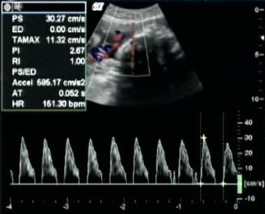
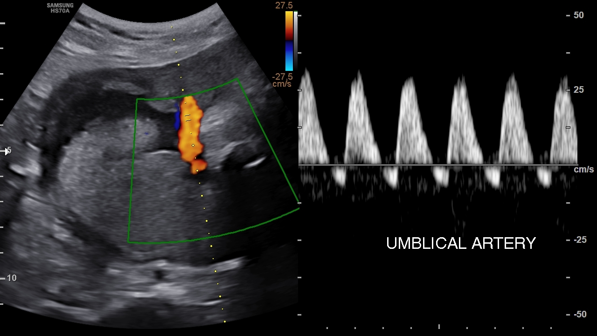

Página 12 · Sofrimento fetal crônico
Diástole zero e reversa: traçados e condutas por corte de IG
As duas ondas e a diástole que afunda
As duas ondas e a diástole que afunda. No traçado normal da umbilical veem-se duas ondas: a sístole (pico) e a diástole (vale). À medida que a resistência sobe, a diástole afunda cada vez mais. É a progressão que começou na página anterior, agora levada ao extremo.
Diástole zero — o que é
Diástole zero — o que é. Quando a resistência fica tão alta que a onda diastólica desaparece — não se visualiza mais a diástole —, temos a diástole zero. O sangue, na diástole, praticamente não avança.
Interativo: avance os três estados sobre o mesmo eixo.
Zero = a onda diastólica desaparece; reversa = o fluxo cruza abaixo da linha zero (reflui) — pior que zero. A linha zero é a fronteira; a conduta depende do corte de idade gestacional.Zero não é parto imediato obrigatório
Zero não é parto imediato obrigatório. Aqui a pegadinha: diástole zero não significa necessariamente parto imediato. Se o feto é muito prematuro (menos de 32–34 semanas), avaliam-se outros vasos (o ducto venoso) antes de decidir. O reflexo “achou zero, tira o bebê” é justamente o erro.
A conduta por corte de idade gestacional
A conduta por corte de IG. Fixe o corte: diástole zero com mais de 32–34 semanas → parto (é grave demais para esperar); com menos de 32–34 semanas → estudar o ducto venoso. Na prova costuma vir “acima de 34”, que não deixa dúvida.

Diástole zero (onda termina na linha de base)
Diástole reversa (cruza abaixo da linha zero)À esquerda, a velocidade diastólica final chega à linha de base (zero, sem fluxo anterógrado mensurável); à direita, o componente diastólico cruza abaixo da linha zero (reversa, fluxo retrógrado) — insuficiência placentária grave.
Vijay Anand (rID 13867) e Ankur Goel (rID 174900), Radiopaedia.org · fonte / licença: CC BY-NC-SA 3.0
Diástole reversa — pior que zero
Diástole reversa — pior que zero. Há um degrau abaixo do zero: a diástole reversa — a diástole fica negativa, abaixo da linha zero. É pior ainda que a diástole zero: o sangue chega a refluir na diástole.
Reversa → parto, e por que o corticoide não cabe
Reversa → parto, e por que o corticoide não cabe. Diante da reversa 🚨, a conduta é parto (estabiliza e parto) — a maioria dos autores concorda: encontrou reversa, resolve. E há uma razão para o corticoide não caber aqui: ele exige cerca de 48 horas de sobrevida para agir, e isso é impossível de garantir na diástole reversa — por isso discutir corticoide nesse cenário é conduta de exceção da exceção. Fecha com o mantra: não se espera a diástole zerar ou reverter para agir — o objetivo é intervir quando a resistência começa a subir e a diástole a afundar, antes de tocar a linha zero. O que mata é o retardo.
Quiz — fixação
Feto de 28 semanas com diástole zero na umbilical. Conduta?
- Gabarito B. Zero com < 32–34 semanas → estudar o ducto venoso antes; a prematuridade extrema muda a decisão.
- A “sempre parto” é a pegadinha — zero não é parto automático abaixo do corte.
- C diástole zero é grave e exige vigilância intensiva/decisão, não alta com retorno tardio.
- D o parto imediato não está indicado nessa idade só pela zero; primeiro o ducto guia — e o corticoide, aqui, tem tempo de ser considerado.
Doppler com diástole reversa. Qual a conduta e por que o corticoide costuma não caber?
- Gabarito A. Reversa é o degrau mais grave (fora do óbito) — resolve; o corticoide precisa de ~48 h, inviáveis aqui.
- B esperar duas semanas numa reversa é aceitar o retardo que mata.
- C com zero/reversa não se pede a cerebral (presume-se alterada) — isso é do cenário de diástole ainda positiva.
- D aguardar 48 h repetindo o exame é exatamente o tempo que não se tem.
Diástole zero com 36 semanas. Conduta?
- Gabarito A. Zero com > 32–34 semanas → parto.
- B 36 semanas não é o prematuro extremo que manda ao ducto — acima do corte, resolve.
- C diástole zero jamais é cenário de alta.
- D esperar reverter é o erro-mãe: não se espera piorar para agir.